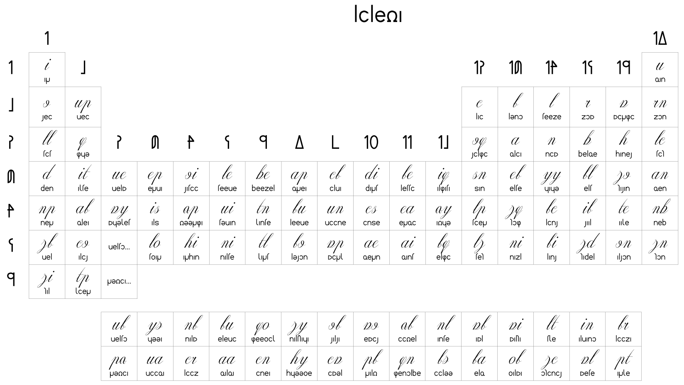
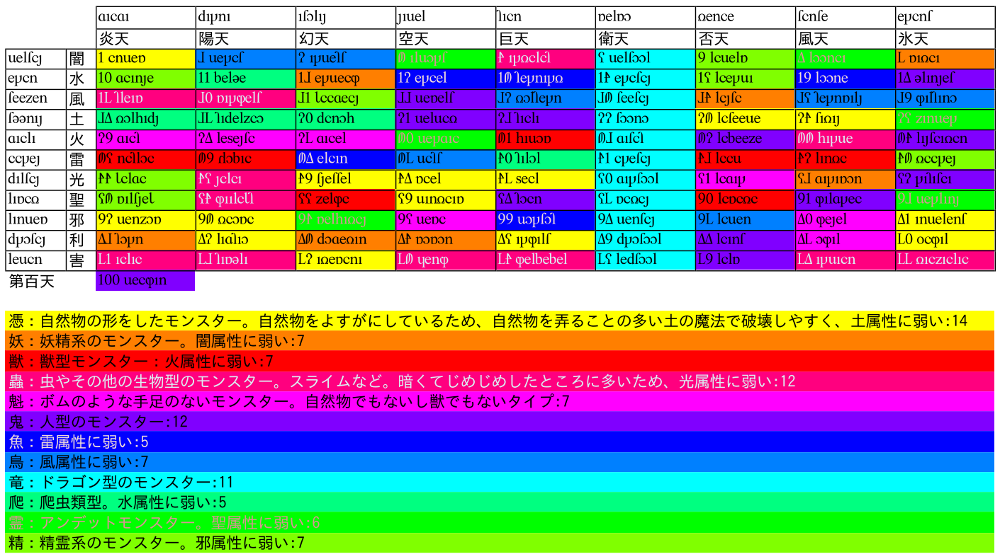
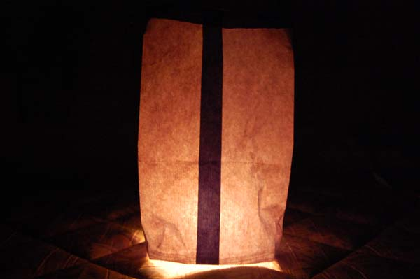

|
��他
â—�å…ƒç´ ã�®å‘¨æœŸè¡¨

made by nias avelantis
â—�é”天表
ç¥�話ã�«ç™»å ´ã�™ã‚‹100匹ã�®é”物（アデル）ã�®è¡¨ã�§ã�™ã€‚
�時��星座全100天����も�り��。

�月燈
5月30æ—¥ã�”ã‚�ã�«è¡Œã�†æœˆç‡ˆç¥ã�«ä½¿ã�†ç�¯ã‚Šã�§ã�™ã€‚
詳ã�—ã��ã�¯å¹»æ—¥è¾�å…¸ã�®melxeltã‚’ã�”å�‚ç…§ã��ã� ã�•ã�„。写真ã�¯å®¤å†…用ã�§ã�™ã€‚

â—�ç¥æ—¥ã�®çµ±è¨ˆ
�デスパニア
�日付変更線
�五芒指星
�月相
|